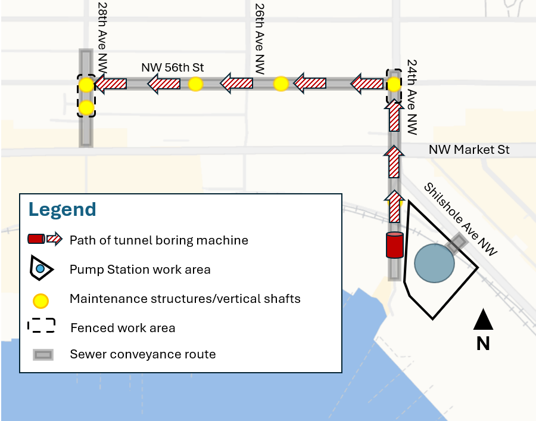
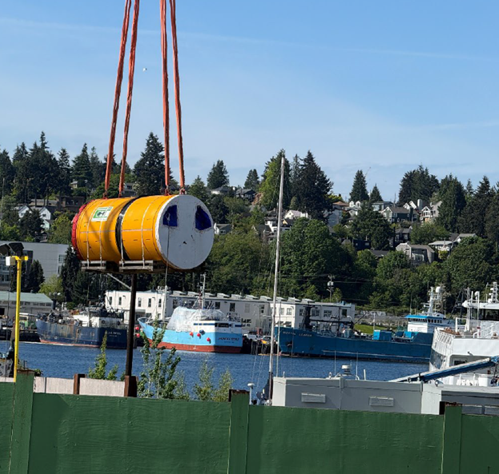

Eighty-seven times a year, on average, Seattle's sewer system dumps raw, untreated sewage directly into Puget Sound, the Duwamish River, the Ship Canal, and Lake Washington. We are not talking about diluted stormwater or laundry water here. It is human waste, mixed with everything else that goes down every drain in the city.
That's the average. In 2024 the real number was 161. Seattle Public Utilities' own annual report, filed with state and federal regulators, counts 161 combined sewer overflows in 2024 totaling 19.5 million gallons. Sixty-three percent of that volume poured out of a single pipe: Outfall 152 in Ballard.
This is not a secret. It is, in fact, exactly how the system was designed.
CSO stands for Combined Sewer Overflow. In older cities like Seattle, a single pipe carries both sewage from homes and businesses and rainwater from streets and roofs. When it rains hard, the pipe fills up. When the pipe fills up, the system has two options: back sewage into basements, or open a valve and dump the overflow into the nearest body of water.
Seattle chose the valve. SPU operates 82 CSO outfalls along the city's waterways, and King County operates another 38 serving the bigger drainage basins. Each one is a concrete pipe that opens directly into the water. When it rains, the pipes open. The sewage flows out.
This is legal. It is permitted under a federal consent decree between Seattle, the EPA, the Department of Justice, and the Washington State Department of Ecology, in force since 2013. The agreement gives the federal government direct authority over how Seattle manages its sewer infrastructure.
Most people in Seattle do not know this. The federal government has direct legal authority over the city's sewer system right now, backed by a court order, enforced by the EPA, and financed by hundreds of millions in federal loans where the EPA is both the regulator and the lender. Nobody at City Hall is talking about it.
A consent decree is a legally binding agreement between a government agency and a party that has been found in violation of federal law. In Seattle's case, the city's combined sewer system violates the Clean Water Act by discharging raw sewage into Puget Sound, the Duwamish River, and Lake Washington during rainstorms.
The consent decree between Seattle and the EPA requires the city to reduce these overflows on a specific timeline. The settlement's stated goal is to eliminate approximately 99 percent of the roughly 200 million gallons of untreated sewage the city was discharging annually when the decree was signed. If the city fails to comply, the EPA can impose fines, mandate specific infrastructure projects, or take the city to federal court. None of this is optional for the city; it is a standing order of a federal court.
The practical effect: the EPA has veto power over how Seattle builds and maintains its sewer infrastructure. Every major capital project in the drainage system must satisfy the terms of the consent decree.
Here is how the city handles a court-ordered timeline it is not going to hit: it renegotiates the timeline. In June 2024, Seattle and King County announced they had "negotiated several important changes" to their CSO control mandates with the EPA, the Department of Justice, and Ecology. The modified consent decree was entered on May 22, 2025. The press releases describe "closer coordination." What the modifications actually do is move the goalposts on the remaining uncontrolled outfalls.
And when the sewage keeps flowing in the meantime? In November 2023, Ecology penalized Seattle $102,500 for 38 sanitary sewer overflow events, some of which reached Puget Sound, Lake Union, or the Duwamish River, and one of which backed sewage into people's homes. King County was penalized $141,000 in the same action, the bulk of it for a single failure: a stuck CSO outfall gate that released 20.7 million gallons of combined sewage into the Ship Canal.
Do the math on that one. Twenty million seven hundred thousand gallons, $141,000 in penalties. That is about two-thirds of a penny per gallon. One stuck gate released more sewage than every Seattle CSO outfall combined discharged in all of 2024, and the fine would not cover the change orders on a single tunnel contract. The fines are not a deterrent. They are a rounding error, and everyone involved knows it.
To pay for the required infrastructure upgrades, Seattle and King County borrowed from the federal government through the Water Infrastructure Finance and Innovation Act (WIFIA) program. WIFIA is a federal loan program administered by the EPA. Seattle Public Utilities took a $192.2 million WIFIA loan for its share of the Ship Canal tunnel. King County took another $96.8 million for its share of the same project. Since 2017, the EPA has put $424.7 million in WIFIA financing into King County and Seattle water quality projects.
The loans carry below-market interest rates, but they also carry compliance covenants. Those covenants give the EPA additional leverage beyond the consent decree itself. If the agencies fall out of compliance, the WIFIA loan terms can be renegotiated or accelerated. The federal government is both the regulator and the lender.
$289 million in federal WIFIA loans on the Ship Canal tunnel alone ($192.2M Seattle + $96.8M King County)
$424.7 million total EPA WIFIA financing into Seattle and King County water projects since 2017
161 overflows / 19.5 million gallons dumped in 2024, per SPU's own annual report
The centerpiece of Seattle's compliance strategy is the Ship Canal Water Quality Project, a 2.7-mile deep-bore tunnel between Ballard and Wallingford designed to store combined sewage from four outfalls (147, 151, 152, and 174) until the treatment plant can catch up. Those four outfalls are the right target: they produced 80 percent of the city's 2024 overflow events and 97 percent of the volume.
The price is the scandal. The project was budgeted at $423 million in 2014. By 2018 the estimate had climbed to $570 million. It now stands at approximately $710 million, a 68 percent overrun. The publicly itemized increases tell the story: $25 million to widen the tunnel, $47 million in design "refinements," $39 million in construction cost escalation, $19 million in "planning and estimating corrections." Each line item sailed through. Nobody was fired. Nobody was fined.
| City | Project | Cost per Mile |
|---|---|---|
| Seattle | Ship Canal Tunnel | $263 million |
| Chicago | TARP Deep Tunnel | $28 million |
Seattle is paying roughly nine times what Chicago paid per mile of comparable deep-bore sewer tunnel. The city has not published a detailed cost comparison or audit of the overrun.
Who covers it? You do. Drainage charges ride on your property tax statement where most people never itemize them, and SPU's own 2025-2027 rate study plans roughly 5 percent revenue increases every year for both drainage and wastewater. The Seattle Times put it plainly when the rate path was proposed: water, sewage, waste, and drainage rates up more than 20 percent by 2026, while the city "moves forward" the huge tunnel. Seattle's drainage rates are the highest in the Pacific Northwest, and they are still not enough to cover the tunnel without federal loans.
Here is what that looks like on an actual bill. Burnham Civic reviewed six months of operating statements for one Seattle apartment portfolio, 21 buildings, most of them the older brick walkups this city says it wants to preserve. Their combined SPU services run at about $863,000 a year. Sewer alone, the line that funds the CSO program, runs at about $421,000. Nearly all of it passes through to residents as utility billbacks on their leases. When the tunnel takes another change order, these are the bills that absorb it.
The storage tunnel itself is real, and it is finished. It runs 2.7 miles, about 14,000 feet, under the north side of the Ship Canal from Ballard to Wallingford, with an internal diameter of 18 feet 10 inches, roughly the height of a two-story house. The boring machine launched in 2021 from the east end, at the Tunnel Effluent Pump Station site in Wallingford, and completed its drive in 2023. When the system runs, the tunnel will hold combined sewage from the Ballard, Fremont, and Wallingford basins, plus King County's 3rd Avenue W and 11th Avenue NW basins, during storms, then release it for treatment once the storm passes. The agencies project it will cut CSO discharges into the Ship Canal, Salmon Bay, and Lake Union by more than 75 million gallons a year.
Here is the part the ribbon-cutting coverage will skip: the tunnel was fully bored in 2023 and will not store a single gallon until 2027. SPU's own winter update says it plainly: "We will be back in 2027 when the storage tunnel becomes operational." Design work began in November 2015. Twelve years from drawing board to operation, and every storm season in between, the outfalls keep doing what they did 161 times in 2024.
What stands between the finished tunnel and a working system is everything on the ends of it. At the Wallingford end, the Tunnel Effluent Pump Station, a 65-foot concrete tower over a 110-foot-deep shaft, topped out its concrete shell in December 2025; the mechanical fit-out that actually makes it pump is expected to run to the end of 2027. At the Ballard end, crews are placing rebar and conduits for the new Ballard Pump Station's tower walls, and a second, smaller boring machine, 7 feet in diameter, is underground right now cutting the conveyance pipe that connects Ballard's outfalls to the storage tunnel. It passed beneath NW Market St in early July 2026, heading north under 24th Ave NW to NW 56th St, where it gets pulled out, turned, and relaunched west to 28th Ave NW. SPU's June 2026 bulletin describes the machine working twelve hours a day, six days a week, through late 2026: "This new sewer pipe, along with the pump station and completed storage tunnel, helps reduce polluted stormwater and sewage from flowing into local waterways."


| Component | Status | Per SPU / contractor reporting |
|---|---|---|
| Storage tunnel, Ballard to Wallingford | Bored and lined, complete | TBM launched 2021, tunneling completed 2023 |
| Tunnel Effluent Pump Station, Wallingford | Concrete shell topped out | December 2025; fit-out expected through end of 2027 |
| Ballard Pump Station | Under construction | Tower wall rebar and conduits in progress, winter 2026 |
| Ballard conveyance pipe, 7-ft bore | Boring now | Passed NW Market St July 2026; tunneling into late 2026, small-diameter work through spring 2027 |
| System starts storing sewage | 2027 | "We will be back in 2027 when the storage tunnel becomes operational" |
One more detail from the project's own updates, offered without comment. In January 2025, SPU tested the finished tunnel's 42,000-gallon flushing system by holding what it called the Combined Sewer Storage Tunnel Waterfowl Flotation Endurance Race: five rubber ducks, racing the length of a $710 million pipe that will begin doing its actual job in 2027.
Not every city solves its CSO problem with a tunnel. Green stormwater infrastructure, rain gardens, bioswales, cisterns, permeable pavement, and restored wetlands, absorbs the rain before it ever reaches the combined pipe. Every gallon a yard soaks up is a gallon that never mixes with sewage and never needs a valve, a tunnel, or a treatment plant.
Here is the number the city does not put in headlines. Seattle set itself a target: manage 700 million gallons of stormwater per year with green infrastructure. Buried on page 57 of SPU's 2024 annual report is the quiet admission that the target has been met, with a website update planned in "celebration of passing the 700 MG target."
Read those two numbers side by side. Green infrastructure citywide now manages roughly 700 million gallons of stormwater a year. The entire 2024 combined sewer overflow was 19.5 million gallons. The distributed, planted, neighborhood-scale approach is already handling 36 times the volume of the problem, and it did not require a $710 million bore under Ballard.
The city will literally pay you to do this. The RainWise program, run jointly by SPU and King County, rebates homeowners in eligible CSO basins an average of about $4,800, up to $13.12 per square foot of roof runoff controlled, to install rain gardens and cisterns on their own property. It is one of the only programs in the city where the ratepayer money flows back uphill, to the people who actually fix the problem at the source.
So how is the city treating its one proven, cheap, citizen-scale program? In 2024, by SPU's own account, RainWise outreach was reduced "due to SPU staffing limitations." More than 800 contractors have been trained since 2009; exactly 20 are currently active on the program's contractor list. The megaproject that is $287 million over budget gets every change order it asks for. The program that pays neighbors to absorb the rain at one ten-thousandth of the cost cannot keep its outreach staffed.
It works at every scale, and Seattle has the receipts. The Thornton Creek watershed in northeast Seattle manages stormwater through natural infiltration at a fraction of tunnel cost. The Barton CSO rain gardens in West Seattle were built specifically to cut overflows, and SPU's own data shows they did. And homeowners outside the combined basins, in the creek watersheds like Thornton and Ravenna where runoff goes straight to the creek instead of the sewer, do not have to wait for the city at all: a bioswale on private property takes that roof and driveway runoff out of the system the day it is planted.
Green infrastructure is not a complete replacement for hard infrastructure. But the consent decree does not mandate a tunnel. It mandates overflow reduction. The question Burnham Civic keeps asking is why the city committed to the most expensive possible compliance path, let it overrun by 68 percent, and starved the alternative its own data says is working.
Burnham Civic identified and mapped every active CSO outfall location in the city of Seattle. The map shows where each pipe is located, which waterway it discharges into, and what neighborhoods are affected.
The outfalls are concentrated along the Ship Canal, the Duwamish River, and the Lake Union shoreline. Some are in residential neighborhoods. Some are near parks where children play. Some discharge within sight of restaurants and marinas.
The data is public. The locations are published by Seattle Public Utilities. But nobody has put it all in one place and said: this is what the highest drainage rates in the Pacific Northwest are buying you.
Burnham Civic is running a compliance operation here, not a commentary operation. Five workstreams are active:
1. The outfall map. We identified and mapped every active CSO outfall in the city, all 82 SPU pipes plus King County's 38, by location, receiving waterway, and affected neighborhood. The city publishes the data in fragments; we put it in one place.
2. The records docket. We have filed public records requests with Seattle Public Utilities pursuing four specific questions: how the tunnel's costs were allocated, how its contractors were selected, the complete change order history behind the $287 million overrun, and the city's own internal compliance assessments. These requests are in progress, and what comes back gets published.
3. The compliance scorecard. Every year, SPU files an annual report with state and federal regulators. We read all of it, every table. That is where the 161 overflows came from. That is where the 700-million-gallon green infrastructure admission came from, on page 57. That is where SPU discloses, quietly, that the 20-year moving average at two outfalls it calls "controlled" still exceeds the state performance standard. The 2025 report lands next spring, and we will grade it in public.
4. The EPA channel. The consent decree was just reopened and modified in May 2025, which means the remaining compliance decisions are live questions sitting on a federal docket, not settled history. We are preparing a formal submission to EPA Region 10 asking for two specific things on every remaining uncontrolled outfall, using a mechanism the EPA has already approved in another city. Members can read exactly what we are asking for, and why it works, in the Operation File below.
5. Neighborhood briefs. Ballard is first: one pipe, Outfall 152, produced 63 percent of the entire city's 2024 sewage overflow volume, and the neighborhoods above it are precisely where the city's own rebate program pays homeowners to fix the problem at the source. Each basin gets its own brief.
If Seattle falls out of compliance, the consequences are real. WIFIA loans carry federal default provisions. A default finding would give the EPA grounds to assert effective control over the infrastructure projects themselves. Burnham Civic is building the case file to support that intervention if the city's performance warrants it.
The objective is straightforward: these projects can be delivered at a fraction of their current cost. Chicago built a comparable tunnel for $28 million per mile. Seattle is paying $263 million. Green infrastructure has proven effective at lower cost and with broader community benefit. Under federal oversight, the city would be compelled to pursue it.
Incorrect passphrase.
Want to support this operation, contribute expertise, or join as a member? Tell us who you are and how you want to help.